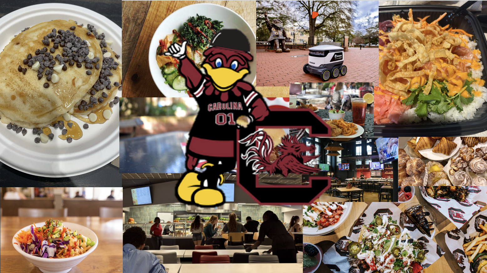

Bite In, Gamecocks
Hungry on campus? We’ve got you covered. Cocky Bites is your go-to guide for all things dining at the University of South Carolina. From honest reviews of dining halls and campus restaurants to tips and tricks for making the most of your meal plan, we’re here to help you find the best bites around. Whether you’re looking for a quick snack between classes, the best study spot with food, or hidden gems you didn’t know existed, Cocky Bites will point you in the right direction.
Latest Updates
(Tap to expand)